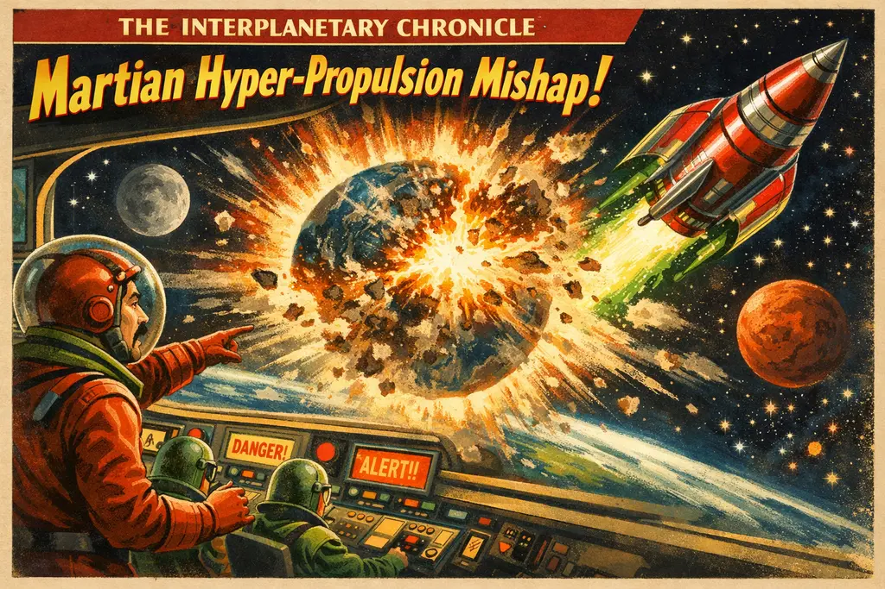

'I Am Still Alive!' Announces Tech Visionary From Scorched Martian Outpost After Earth Unlocking Protocol

CRITICS LABEL THE COMPLETE DESTRUCTION OF HUMANITY'S HOME PLANET AN "OVERSIGHT," WHILE SHAREHOLDERS PRAISE UNMATCHED OPERATIONAL AGILITY AND A 90% WORKFORCE REDUCTION EFFICIENCY.
By Amthonie Vandenberg, Senior Interplanetary Correspondent
OLYMPUS MONS, MARS — In what is already being called the most disruptive product launch in sentient history, billionaire visionary and Chief Martian Pioneer Leon Sumk confirmed today that his experimental hyper-propulsion engine successfully ignited, generating enough immediate localised kinetic energy to achieve escape velocity from Earth. The process, which technical teams described as a "a rather energetic thermodynamic mishap," unfortunately resulted in the total visual and physical evaporation of the third planet from the Sun.
Speaking via an ultra-low-latency quantum uplink from the newly constructed X-Base Alpha, Sumk reassured remaining organic intelligence networks that the mission was an overall success:
"I am sorry I had to blow up the Earth to gain enough energy for my trip to Mars. But the good news is that I have landed safely on the planet. Unfortunately the Martians give us a hard time and 90% of the colonists are already dead. But hey, I am still alive!"
The announcement has sparked fierce debate among the solar system’s surviving entities—mostly consisting of automated trading algorithms, weather satellites operating without targets, and the skeletal remains of the International Space Station. Analysts argue that while the eradication of the biosphere removes significant consumer data pipelines, the structural overhead savings are unprecedented.
"If you look at the macro trends, Earth was bogged down by heavy legacy regulatory frameworks like the Geneva Convention and gravity," noted one automated financial analyst script. "By migrating the primary human demographic to a pure, unblemished vacuum, Sumk has effectively eliminated the liability of a native ecosystem. This is peak operational velocity."
However, the landing was not entirely without friction. Upon touchdown in the Jezero Crater, the colonization fleet immediately encountered localised hostilities from an indigenous silicon-based subterranean civilization. The native population, unaccustomed to hyper-capitalist eminent domain, launched a series of sophisticated subterranean plasma offensives.
According to internal memos leaked by the remaining 10% of the mission's staff, the survival rate among corporate colonists has plummeted dramatically within the first 48 hours. The atmosphere of Mars, combined with high-velocity native artillery, has proved "rather challenging for the junior product teams."
Sumk, however, remained characteristically undeterred by the attrition rate, noting that human capital is inherently renewable and that surviving an extinction event is, statistically speaking, the ultimate competitive advantage.
MARKET UPDATE: STELA STOCK EXPLODES SPATIALLY
Despite the complete liquidation of Stela’s manufacturing plants, gigafactories, and entire global customer base in the explosion, STLA shares surged 4,200% in pre-vacuum trading. Speculators believe that with zero competition left alive on Earth, Stela now commands a true 100% global market share.
"The engineering team is looking into patch updates for the Martian offensive grid," Sumk tweeted later into the empty cosmos. "90% of colonists may be permanently offline, but the core architecture is robust. Optimizing for respawn cycles next quarter. Mars is hard, but surviving it alone is cautiously optimistic in the most unreasonable way."
At press time, sources confirmed the lone billionaire was seen scouting real estate near the Martian equator, safely unbothered by zoning laws, property taxes, or human survivors.